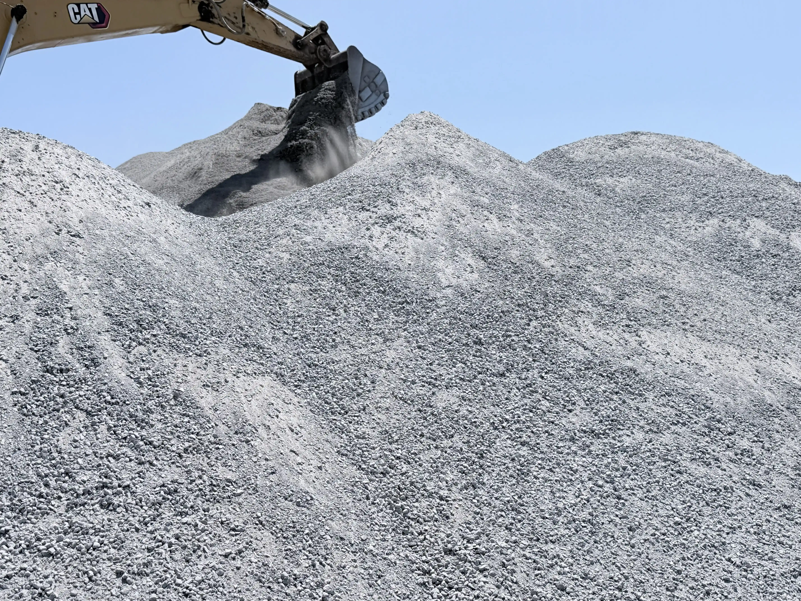

Product 01
Crush Dust
Crush dust is a fine quarry by-product commonly used for compaction, bedding, blinding layers, and surface preparation where a tighter fill material is needed.
- Used under paving, walkways, blocks, and smaller foundation work.
- Helps create a compacted base with a smoother finished level.
- Suitable for contractors, yard collection, and bulk supply requests.